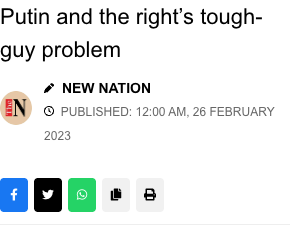
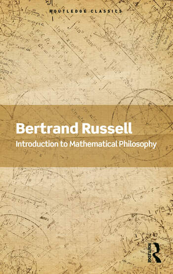

1:10:56 · 10 OPERE
Da un editoriale sul New York Times.
Il filo del discorso
Dr Divago prende avvio da un articolo di Suzanne Burdick sulle campagne di Google contro la disinformazione e concentra poi il commento su una colonna di Paul Krugman dedicata all’attrazione di parte della destra americana per Putin. Il filo della conversazione è la responsabilità di intellettuali e giornalisti quando il prestigio personale, la comunicazione politica e una guerra si intrecciano. Le posizioni dei due articoli sono distinte dalle repliche del relatore e collocate nel febbraio 2023. La lettura procede con frequenti digressioni: Popper e la società aperta, Bauman, la funzione delle biblioteche, spettacolo e incentivi economici, le memorie di Schreber, Dante ed Eco. Russell, Einstein e Schweitzer sono evocati come esempi di dissenso; il libro di filosofia matematica composto da Russell in prigione offre un riferimento concreto al rapporto fra attività intellettuale e costo delle proprie convinzioni. La seconda parte affronta rappresentanza, Orbán, immagini della virilità, potenza economica e militare, precedenti americani e pericolo nucleare. Il tono è aspramente polemico e le accuse restano attribuite. La scheda distingue il commento firmato di Krugman da un editoriale collettivo e segnala due punti che incidono sulla lettura: il passaggio sulle armi superiori viene modificato nella traduzione orale, mentre una previsione condizionale sul futuro non contraddice automaticamente un giudizio sul presente. Né reputazione accademica né invettiva personale sostituiscono il controllo dei testi e dei fatti.
I libri nel discorso

La società aperta e i suoi nemici
Copertina: Armando Editore · Classici · 2018 · volume unico
Copertina autentica di riferimento, controllata visivamente. L’edizione non è identificata come quella usata nel video.
Popper, società aperta e Platone come nemico sono espliciti; riuso dell’opera.
Passaggio 5:50 ↗ · Fonti e libro ↗
Modernità liquida
Identificazione probabile
Copertina: Laterza · i Robinson, Letture · 2011 e ristampe
Copertina autentica dell’edizione di riferimento, controllata visivamente. Non identifica l’esemplare letto o citato nel video.
Bauman e metafora della società liquida espliciti; titolo completo non pronunciato. Rinvio probabile a Modernità liquida, senza dedurre altri volumi dal solo autore.
Passaggio 8:10 ↗ · Fonti e libro ↗
Memorie di un malato di nervi
Copertina: Denkwürdigkeiten eines Nervenkranken, 1903. Copertina della traduzione italiana Adelphi, Gli Adelphi 310, 2007, 536 pagine e una tavola, a cura di Roberto Calasso, traduzione di Federico Scardanelli e Sabina de Waal, ISBN 9788845921643. La precedente edizione italiana Adelphi del 1974 è distinta dalla ristampa raffigurata.
Immagine autentica dell’opera, controllata visivamente; l’edizione di riferimento non è attribuita al filmato.
Schreber e memorie del malato di nervi sono espliciti. Corretta nelle note la confusione con un bambino curato personalmente da Freud.
Passaggio 19:34 ↗ · Fonti e libro ↗
Putin and the Right’s Tough-Guy Problem
Copertina: Intestazione nativa della ripubblicazione New Nation, 26 febbraio 2023: titolo della colonna e metadati della testata. Intestazione della pagina web originale; l’immagine non raffigura una pagina a stampa del New York Times.
Originale di Paul Krugman in New York Times Opinion del 23 febbraio 2023; la data visibile26 febbraio 2023 appartiene alla ripubblicazione. La firma Krugman è verificata nel testo accreditato e non è visibile in questa intestazione, che riporta New Nation. Le icone social sono parte della testata nativa; corpo dell’articolo escluso.
Autore/testata espliciti all’apertura; a1243.03–1262.55s il titolo è reso nella variante Putin and the Fading Tough Guy. Seguono apertura tradotta, riflessioni su Orbán/Cruz, logistica e tecnologia, poi finale sugli aiuti. L’insieme identifica la stessa colonna, non una seconda opera con titolo diverso.
Passaggio 20:43 ↗ · Fonti e libro ↗
Divina Commedia
Identificazione probabile
Copertina: Giunti Barbera · Passepartout, 2021 · edizione di riferimento
Verso riconoscibile Lasciate ogni speranza voi ch’entrate, Inferno III,9; titolo non pronunciato, identificazione probabile del testo, non dell’edizione.
Passaggio 23:29 ↗ · Fonti e libro ↗
Apocalittici e integrati
Identificazione probabile
Copertina: La nave di Teseo, I delfini, 2025; opera originariamente pubblicata nel 1964.
Immagine autentica dell’opera, controllata visivamente; l’edizione di riferimento non è attribuita al filmato.
Eco e termine integrati in funzione critica: collegamento probabile al libro; titolo completo non pronunciato.
Passaggio 24:42 ↗ · Fonti e libro ↗
Introduzione alla filosofia matematica (Introduction to Mathematical Philosophy)
Identificazione probabile
Copertina: Routledge Classics · copyright 2023 · ISBN 9781032312279
Copertina autentica intera dell’edizione Routledge Classics: Bertrand Russell e titolo inglese su fondo di calcoli e disegni matematici color ocra. L’edizione moderna non è attribuita al video; l’originale è del 1919.
Russell e libro sulla filosofia della matematica scritto in prigione durante la Prima guerra mondiale. McMaster conferma stesura Brixton 1918 e pubblicazione 1919; titolo non pronunciato, identificazione probabile, non Principia Mathematica.
Passaggio 27:20 ↗ · Fonti e libro ↗
Costituzione degli Stati Uniti d’America
Copertina della raccolta: Testo firmato il17settembre1787. Per l’immagine si usa la raccolta Penguin Classics The Federalist Papers, ISBN 9780140444957, che dichiara di includere il testo della Costituzione; non è una fotografia della pergamena originaria.
Copertina autentica di The Federalist Papers: la descrizione editoriale attesta che la raccolta comprende il testo completo della Costituzione. Non è il frontespizio costituzionale del 1787 e Hamilton, Madison e Jay non sono presentati come unici autori del documento.
La Costituzione americana è richiamata come termine di confronto fra principi e scelte politiche; nessuna edizione cartacea identificata.
Passaggio 30:20 ↗ · Fonti e libro ↗
Pentagon Papers (Report of the Office of the Secretary of Defense Vietnam Task Force)
Prima pagina del fascicolo introduttivo e indice: Rapporto finale del 1969 · fascicolo introduttivo e indice · scansione NARA declassificata nel 2011
Prima pagina del fascicolo introduttivo e indice conservato dai National Archives; non è la copertina di un libro e non riproduce l’intero rapporto. La voce riguarda il corpus documentario.
Pentagon Papers e ruolo del New York Times nella guerra in Vietnam sono espliciti; riferimento alla raccolta documentaria, non di una particolare edizione libraria.
Passaggio 34:09 ↗ · Fonti e libro ↗
La macchina del tempo
Identificazione probabile
Copertina: Feltrinelli · Universale Economica, I classici
Eloi e Morlock, con Wells, identificano La macchina del tempo; titolo completo non pronunciato, identificazione probabile. Non inferiti romanzi di Orwell o Huxley dai soli nomi.
Passaggio 52:35 ↗ · Fonti e libro ↗